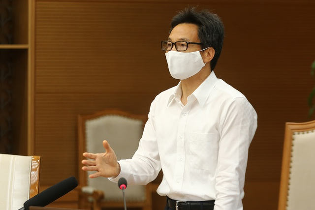
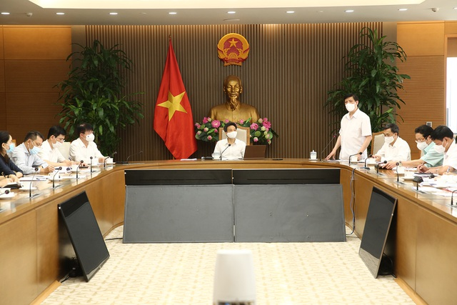

THỐNG KÊ COVID-19
|
|
THỐNG KÊ COVID-19 |
| Video | Sự kiện | Xã hội | Thế giới | Kinh doanh | Bất động sản | Thể thao | Việc làm | Nhân Ái | Sức khỏe | Văn hóa | Giải trí | Xe++ | Sức mạnh số | Giáo dục | An sinh | Pháp luật |

"Khả năng còn nguồn dịch khác trong cộng đồng ngoài 4 nguồn hiện tại"Dân trí - Phó Thủ tướng Vũ Đức Đam điểm lại diễn biến 4 nguồn dịch ở Đà Nẵng, Yên Bái, Hải Dương, Bệnh viện K, Bệnh viện Nhiệt đới và lưu ý khả năng còn những nguồn dịch khác trong cộng đồng.
|
TIN TỨC SỰ KIỆN
|

Phó thủ tướng Vũ Đức Đam chủ trì cuộc họp của Ban chỉ đạo quốc gia phòng chống dịch ngày 10/5 |